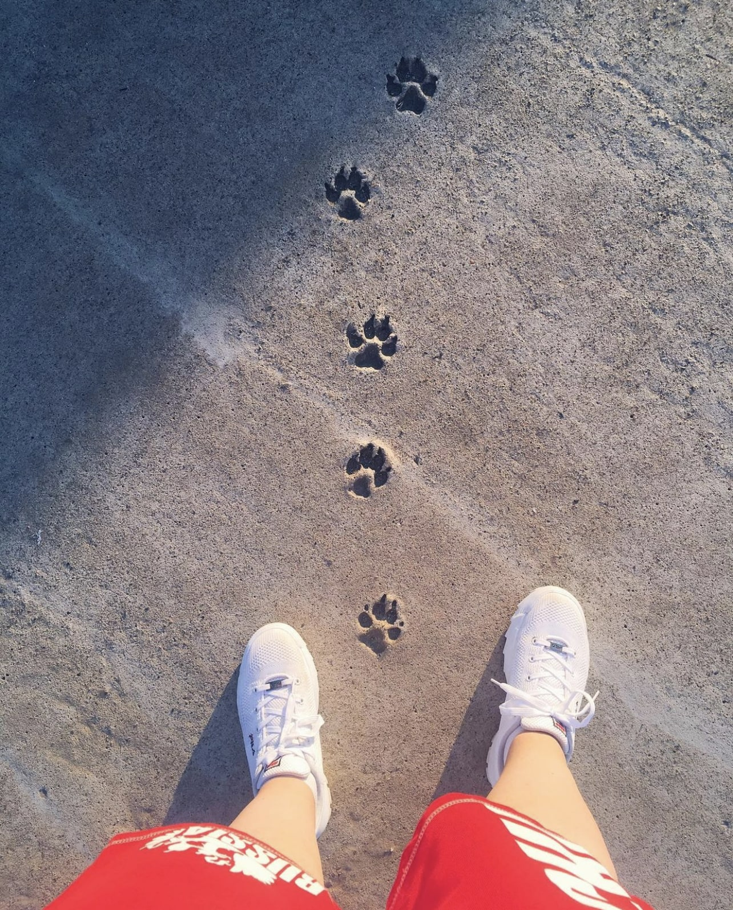
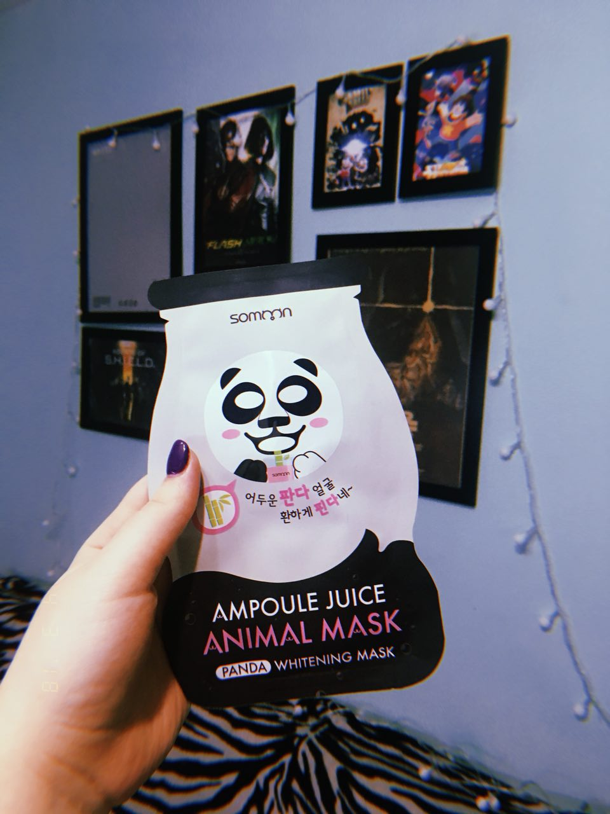
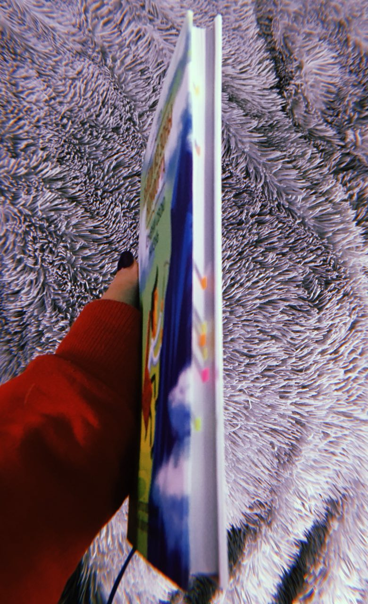

Быть, а не казаться
Для чего я создала этот канал? Долгое время мне очень хотелось работать над своим инстаграмом, я реально очень хотела превратить его в своеобразный блог. Но со временем поняла, что всё таки, это не та интернет площадка которая мне нужна. Фишка в том ,что инст это визуальный контент и в большинстве люди хотят видеть у себя в ленте красивые картинки, ну а что я? Я не могу предложить это подписчикам в виду своего режима жизни в последний год. Да, я люблю фотографировать, обрабатывать фотографии и рассказывать что-то когда нахожусь, например, в другой стране и надеюсь те мои посты были реально интересными и полезными для кого то. Но что выкладывать в промежутках между поездками, когда каждый день практически такой же как у всех? Даже что бы поделиться банальной мыслью или полезной штукой, нужно подобрать к этому какую то красивую фотку, желательно свою, но так же желательно не своей морды. Иначе вся галлерея аккаунта превратится в фотоальбом имени меня. А делиться то хочется. И не в сториз, которая исчезает через 24часа и уже никто и никогда не сможет посмотреть её снова. В общем и целом Инстаграм это не простой путь для выражения себя, и к тому же сейчас он всё больше и больше переходит в разряд коммерческой, рекламной соцсети. То ли дело Тележка) (её конечно тоже не обойдут люди пытающиеся заработать, но все мы выживаем как можем), а пока этого не произошло будем довольствоваться этой простотой. Зашёл, написал что хотел, кому надо прочитали, потом если надо перечитали через месяц ещё раз. А самое главное, что мне кажется если кто-то здесь читает, то человеку реально интересна (надеюсь) я и мои мысли, ведь в нынешнее время визуальных коммуникаций и голосовых сообщений люди совершенно разлюбили читать. А мне очень хочется, что бы меня окружали только те люди которым на меня не всё равно♥️
Про маски
Я всегда очень любила тканевые масочки, во время поездки в Макао закупились с ма одним известным корейским брендом и благополучно я пользовалась этими масками очень долго. Но всё хорошее рано или поздно заканчивается😅 Встал вопрос, что лепить на своё лицо дальше, что наиболее эффективно и вообще как выбрать из всего многообразия, что сейчас представлено на рынке? К тому же меня не устраивает то, что я делала эту процедуру не регулярно, поэтому ставлю перед собой цель, выработать привычку делать маски раз в неделю, а заодно и искать наиболее эффективную. Так что каждое воскресенье теперь хочу тестить новую маску и делиться с вами мнением на её счёт
Про книги
Итак, как и обещала,делюсь впечатлениями о книге «Выйди из зоны комфорта. Измени свою жизнь» Сама книжка тоненькая, так что в принципе, при достаточном количестве времени можно осилить за один вечер, но я растянула на три. 🌝 Лично мне показалось,что название должно звучать немного иначе - «Тайм менеджмент и его влияние на вашу продуктивность», вот как бы я её назвала, но в таком случае продаж бы у неё, пожалуй, поубавилось 😅 Большая часть глав рассказывает о том, как полезно планировать своё время ⏰и почему это плодотворно скажется на вашей жизни. Просто бери и каждую минуту трать с пользой☝🏻, вот основная аксиома этой незамысловатой книжки. Некоторые выводы недостаточно разобраны и аргументированы. Мол, вот вам надо делать так, а почему и зачем - вопрос? Почти ко всем этим выводам ,лично я уже так или иначе пришла путем долгих размышлений и изучением соответствующих статей и литературы.🧐 Именно этими выводами я и хотела делиться тут в телеграмме с вами. ( именно их я отметила стикерами и планирую разобрать примерно в таком же виде, как мой пост про не умение решать проблемы, что был выше ) Надеюсь вам будет интересно 🙃 В целом книжка подойдёт тем, кого совершенно не устраивает текущее положение дел в жизни. Она сможет послужить не плохим руководством к действию и стать толчком к размышлениям над какими то аспектами. Если бы она попала ко мне под годика назад, то стала бы для меня, наверное, очень полезной. Сейчас(увы) я рада, что не потратила на неё те 700₽, что она стоит в бумажном виде. 300₽ как за электронную версию, я считаю вполне адекватный ценник.